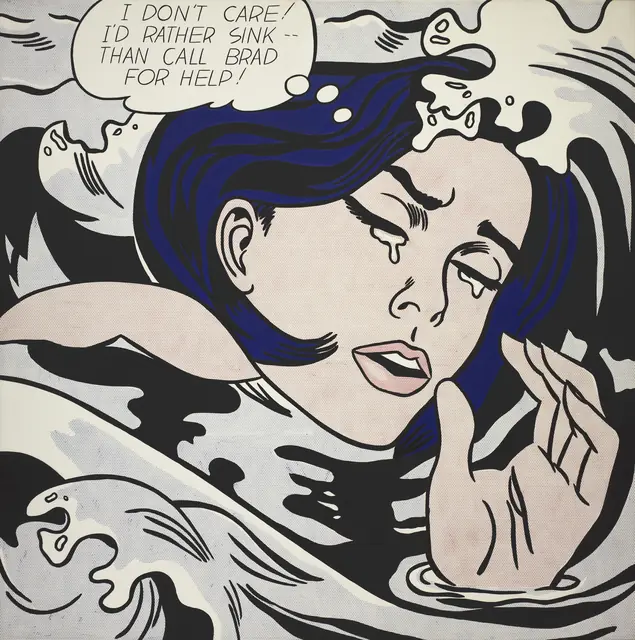
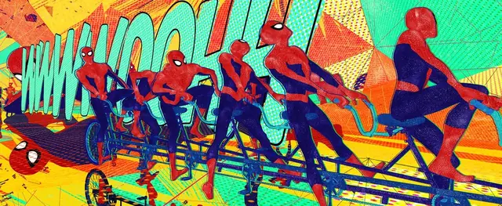
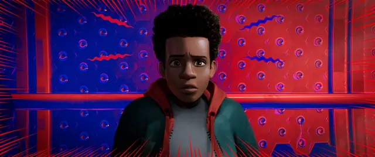
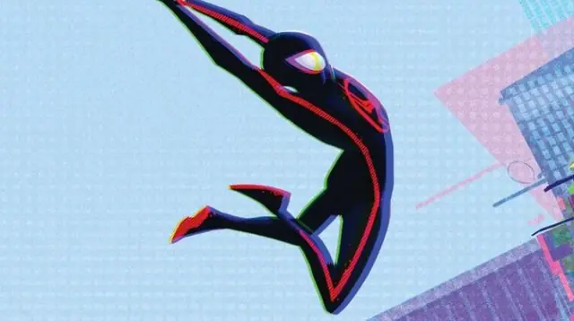
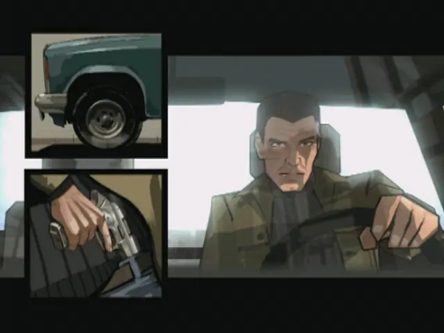
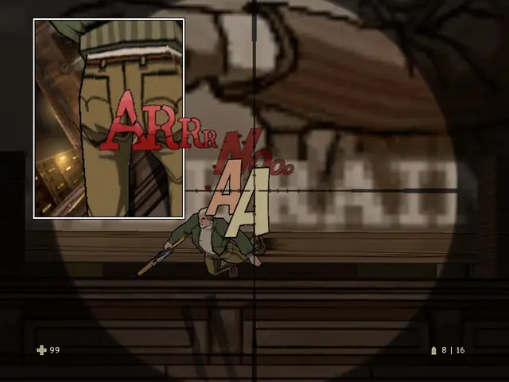
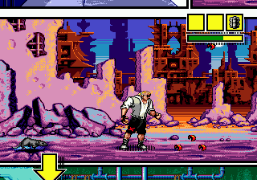
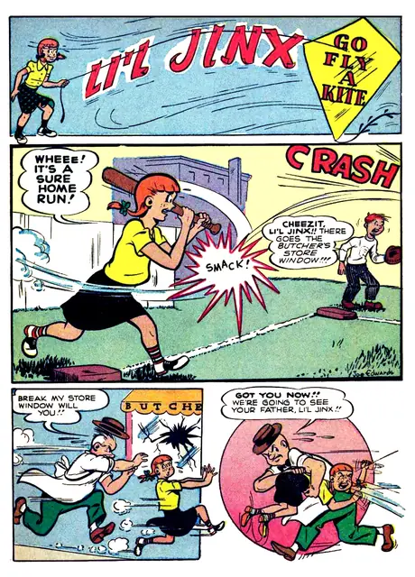
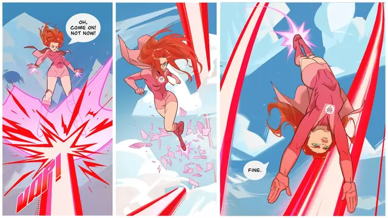
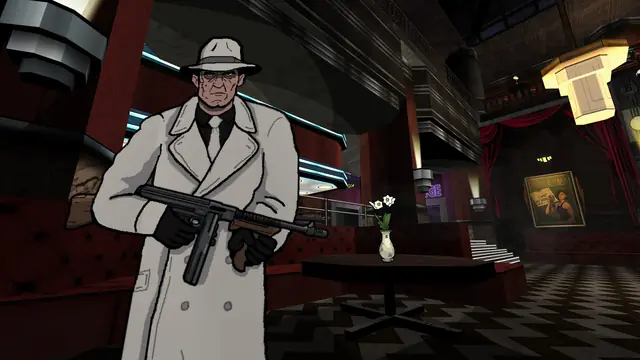

The feel
This is the printed comic page, flaws included. Justin K. Thompson, production designer of Spider-Man: Into the Spider-Verse, thought back to the hours he spent as a young reader staring at comic pages: the line work, the Ben-Day dots and the misaligned plates of four-colour printing were what made comics feel tactile.1 He imagined Miles looking up at a world where the dots, the offsets and the line work on people's faces really exist. The colour is bold and high in contrast, saturated, with black in the shadows, and it can swing from a blue panel to a red one.1
Roy Lichtenstein chose the style of cartoons, with their easily digestible lines and primary colours, as a fitting vehicle for painting a dramatic scene in a detached, calculated way.2 Josh Beveridge, an animation supervisor on Spider-Verse, loves animating on twos, each pose held for two frames, because it is crisper and more pop art, and he calls that pop-art graphic clarity critical.3 The team added drawn ink lines to make it feel even more like a comic book, and for Beveridge a simple line can exaggerate an emotion, clarify an action or describe a form.3
- inked
- loud
- dotted
- off-register
- punchy
- lettered
Where it comes from
In the United States, magazines such as Puck and Judge were the first to print comic strips in colour, from 1888.4 Machine-printed comic strips put their shading and backgrounds in uniform areas of Ben-Day dots,2 a dot pattern used by engravers.5 Roy Lichtenstein enlarged that print into painting: Whaam! (1963) takes its composition from an Irv Novick panel in All-American Men of War, published by DC Comics in February 1962, and he made its Ben-Day dots by pushing oil paint through a homemade aluminium mesh with a small scrubbing brush.2 In games, Comix Zone grew from an animated demo that Peter Morawiec made on his Amiga after trips to comic shops with his coworkers at Sega Technical Institute,6 and Ubisoft's XIII used cel shading to tie its first-person shooter to the 1980s comic by Jean Van Hamme and William Vance.7 Spider-Man: Into the Spider-Verse took the printed look into feature animation, and built it almost entirely in compositing.8
Core elements
Halftone dots and hatching
Where a tone changes, the page uses dots or lines instead of a smooth blend. Imageworks made it a rule on Spider-Verse: transitions became dot patterns, and most shadows were hatched with lines running from thin to thick.9 Whaam! shades the same way, with uniform areas of Ben-Day dots, purple on the fighter plane and blue for the sky.2
Plates out of register
The four colour plates of comic printing did not always line up,1,9 and that offset is prominent throughout Spider-Verse.1 Imageworks even used it for focus: instead of camera blur, the colour passes slide apart, and the shot still reads as a focus pull.9,8
Heavy black outlines
Thick black lines enclose areas of primary colour and lettering, in the tradition of the machine-printed strips Lichtenstein painted from.2 XIII's cel-shader keeps a black line around its characters and objects at all times.7 Spider-Verse drew face lines as part of the animation, because comic artists get emotion from lines that are inconsistent and not tied to the form underneath.9
Light drawn as halftone dots
Light is printed too. In Spider-Verse's train station the flares are halftones that scale with the light, and dots are sprinkled in to stand for glows.8 The climax floats what Imageworks called Kirby dots, after the dots and splatters Jack Kirby used, as a nod to comics being printed out of dots.9
Lettered sound effects
Noise is lettered into the picture, in type that shows how loud it is and what kind.10 Whaam!'s title jags up from the fireball in yellow,2 and XIII prints BANG! and BAM! across the screen.7
Panels and speech balloons
The page's furniture comes into the frame. XIII opens comic panels on screen to point out keys and warn of ambushes,11 and Comix Zone puts the player inside a comic book, a theme Peter Morawiec says was the primary hook from the start.6 Speech sits in balloons: in Whaam! the pilot's words float in a yellow one above his plane.2
How to do it
Build a halftone shader
In a toon shader, sample a tiling dot texture in screen-space coordinates and compare it with the light intensity using step, so each pixel is either fully lit or fully shadowed, and brighter light lights more of them.12 Swap step for smoothstep over a single pixel, measured with fwidth, to anti-alias the dots, and remap the pattern like a levels adjustment to move the line between light and shadow.12 Imageworks' compositors dialled halftones and hatching thick or thin from the lighting, along with the size, angle and spacing of each screen.8
Choose where the dots are anchored
On Spider-Verse, halftone dots in a rim light had to track with Miles as he swung past on a web, or he seemed to swim through the pattern, while other dots stayed loose so they read as light rather than texture.8 Ronja Böhringer's shader samples its pattern in screen space, but UV or triplanar coordinates work too.12
Screen each plate at its own angle
For flat art, a colour halftone filter divides the image into small cells and replaces each with a dot sized by the cell's brightness, with a maximum dot radius and a separate screen angle for each of the cyan, magenta, yellow and black channels.13 Keep the angles apart: overprinted screens cause moiré, which is why printers rotate the screen for each of the four plates.14 A screentone fill gives dots or lines set in lines per inch, and aligning its cells to the pixel grid is the key to avoiding moiré on screen.15
Match the dot size to the paper
Match the screen to the paper you are imitating: Britannica gives 50 to 85 lines per inch for newspapers and 100 to 120 for magazines.16 For Spider-Noir, Thompson went back to late-1930s comics, many printed in black and white with little fidelity, where the Ben-Day dots were much bigger and the line work much rougher.1
Draw three kinds of ink line
Imageworks used three kinds of line: lines built into the model, drawn lines that separate forms such as the underside of the chin from the neck, and emotional face lines that start as drawings and reach animators as a rig.9 To generate ink from a 3D scene, draw strokes only where the camera sees the surface: along contours, at creases sharper than a set angle, at borders between materials, and along the line between light and shadow from a chosen light.17
Animate on twos with smears
Animate on twos: at 24 frames per second each pose holds for two frames, and on Spider-Verse how and when to use twos was a creative call, even within a single shot.3 The film was mostly on twos, with ones and threes as well, and had no motion blur: fast camera pans were smeared and streaked in a blocky, illustrated way instead.9
Letter the balloons and sound effects
Point each balloon's tail at the speaker's mouth and end it about 50 to 60% of the way from the balloon to the head.10 Emphasise words with bold italic, since plain bold is almost never used, give screams a burst balloon with a heavier stroke, and leave exclamation marks off sound effects unless you want them to look childish.10
Cheat sheet
- Screen ruling
- 50 to 85 lines per inch for newsprint, 100 to 120 for magazines16
- Dot edge
- Contrast 80 to 95%: sharp but anti-aliased. 100% looks aliased15
- Tone
- No smooth gradients: dots for transitions, hatching for shadows9
- Line
- Thick black, around areas of primary colour and lettering2
- Motion blur
- None. Smears and streaks instead9
- Balloon tail
- Points at the mouth, ends 50 to 60% of the way to the head10
Do
- Draw each world from a different kind of comic. Spider-Verse took Spider-Noir from Will Eisner, Spider-Ham from Mad Magazine and Peni Parker from manga, because comics are not one style.1
- Change a panel's colour when a feeling changes, as comics do at their most expressive moments.1
- Turn game feedback into comic devices. XIII shows enemies walking behind a wall as the word "tap" moving across the screen, as if you could see their footsteps.18,11
- Mix colours by stacking dot layers. For Freedom Force vs. the Third Reich, Robb Waters studied the dot patterns in an old comic and stacked his own layers of dots to get other colours.7
- Leave the artist's hand in. Imageworks kept imperfections that looked good, and started its explosions and sparks as hand-drawn 2D animation.9
Avoid
- Smoothness. On Spider-Verse, animation on ones looked too smooth, and motion blur adds the same smoothness.9
- Dots that slide over a moving character. If the rim-light dots had not tracked with Miles as he swung past, he would have seemed to swim through the pattern.8
- Knocking the subject out of register. Colour passes that don't line up look blurry and are hard to look at, which is why Imageworks used the offset for depth of field.9,8
- Amateur lettering: plain bold for emphasis, the crossbar I anywhere but the pronoun and acronyms, and balloons or sound effects that brush against the inks.10
- Modelling every ink line. XIII's cel-shader plug-in couldn't cheat with textured surfaces, so treating all the geometry with it made the 3D models extremely dense, and the team painted textures with black outlines onto the other surfaces instead.7
Tools and tutorials
- Halftone Shading
Ronja Böhringer's surface shader that thresholds lighting against a dot texture, with anti-aliased edges.12
- Krita: Screentone
A fill layer of dots or lines, set in lines per inch and aligned to the pixel grid against moiré.15
- Comic Book Grammar & Tradition
Nate Piekos on balloons, captions, emphasis and sound effects, from established tradition and his own lettering.10
- Blender: Line Art modifier
Grease Pencil ink lines from a 3D scene: contours, creases, material borders and light contours.17
- Photoshop Elements: Color Halftone
Dot radius and a screen angle for each CMYK channel.13
Palette
Sampled from Lichtenstein's Whaam! and Drowning Girl, XIII's key art, a 1949 Li'l Jinx page from Pep Comics and the end titles of Into the Spider-Verse. Click a colour to copy its hex code.
Feel the vibe
In motion
More references










Games
- Comix Zone
Study how a whole game lives inside a comic book. Peter Morawiec says the theme was the primary hook from the start.6
- XIII
Study the split: a cel-shader plug-in for the characters and many weapons, Photoshop textures with black outlines for the other surfaces.7
- Freedom Force vs. the Third Reich
Golden Age heroes in "dot color", built from dot-pattern layers stacked in Photoshop.7
- Ultimate Spider-Man
Study the cutscenes that frame their shots in comic panels, and the cel shading that keeps every character and set piece bright and sharp.19 Morawiec points to it as a 3D game that uses many of Comix Zone's ideas.6
- Hi-Fi Rush
John Johanas pitched a look somewhere between an American comic book drawn by a Japanese team and anime drawn by an American one.20
- Fallen Aces
A first-person brawler with a cartoony look that evokes old Dick Tracy strips.21
Film, art and more
- Spider-Man: Into the Spider-Verse
Halftones, hatching and offset colour in motion, dialled shot by shot in Nuke.8
- Whaam!
An Irv Novick war panel restated on two canvases. Lichtenstein said he was nominally copying, but really restating.2
- XIII
The comic the game adapts. The game's art team also looked to architecture, old films and other strips.7
- Jack Kirby
The dots and splatters in his work gave Spider-Verse its Kirby dots.9
- Spider-Gwen
Its dry-brush, streaky covers and pink, mint and purple palette shaped Gwen's look in Spider-Verse.1
Sources
- 1‘Spider-Man: Into The Spider-Verse’: Production Design Is About Character, Not Style
- 2Roy Lichtenstein, Whaam! 1963: summary
- 3How Spider-Man: Into the Spider-Verse's Technical Wizardy Brought Comic Books to Life
- 4Comic strip
- 5Roy Lichtenstein
- 6Interview: Peter Morawiec (STI Programmer)
- 7Interactive Comics
- 8Rewriting the Visual Rule Book on ‘Spider-Man: Into the Spider-Verse’
- 9‘If It’s Not Broke, Break It’: Sony Imageworks’ Renegade Approach To ‘Spider-Man: Into the Spider-Verse’
- 10Comic Book Grammar & Tradition
- 11XIII Review
- 12Halftone Shading
- 13Pixelate filters (Photoshop Elements User Guide)
- 14Photoengraving: Colour separation
- 15Screentone
- 16Halftone process
- 17Line Art Modifier
- 18E3 2002: XIII hands-on
- 19Ultimate Spider-Man Review
- 20How Hi-Fi Rush came together to deliver "kinetic action comedy" inspired by Edgar Wright and Shaun of the Dead
- 21'Crime noir shooter' Fallen Aces looks like a combination of Condemned: Criminal Origins and Dick Tracy comics